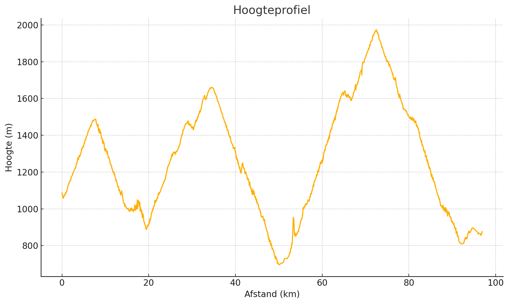

Top van de Col: Cormet de Roselend

Details
Chauffeur: Jeroen
Adres hotel: La Verdache - Longefoy, 73700 Séez, Frankrijk
Voorbeschouwing - kort
Van Flumet naar Bourg-Saint-Maurice begint de Route des Grandes Alpes met een bittere neusduik in de epische bergen: de Col de Meraillet dwingt in de eerste 7 km tot pure kracht, gevolgd door de meedogenloze 19 km van de Cormet de Roselend met haarspeldbochten en verraderlijke windvlagen, een technische afdaling naar de stad, én een verraderlijk muurtje vlak voor de finish – dé kans voor klimmers met lef om vroeg in koers het verschil te maken.
Basisgegevens
| Afstand (km) | Klim (m) |
|---|---|
| 97 | 3005 |
Hoogteprofiel
Klimprofiel

Voorbeschouwing Etappe 1
De eerste etappe van de Route des Grandes Alpes is geen vriendelijk opwarmertje, maar een sensatie-tour door de rotsige grandeur van de Franse Alpen. Vanaf het vertrek in Flumet kronkelt de weg onmiddellijk omhoog, de uitlopers van de Beaufortain in, waar de Col de Meraillet met zijn 7 km à 8 % directe pijn in de benen introduceert. Dit is een plaats waar al vroeg in de dag testballonnetjes worden opgelaten: klassementsrenners die hun rivalen gek willen maken, ijzige kopmannen die de benen voelen en spurters die tot het uiterste gaan.
Na een korte, bochtige afdaling volgen de vlakke stroken naast het stuwmeer van Roselend, een boeiend decor waar de wind – soms verraderlijk, soms statig – als stille metgezel kan toeslaan. Stevige rukwind of mistbanken boven het water maken dit net zo’n parcours dat je in je hoofd moet uittekenen, want elke bocht kan verraderlijk zijn.
Eenmaal bij Arêches-les-Bois begint de meedogenloze aanloop naar de Cormet de Roselend: ruim 19 km klimmen, met stukken van 9 % en technische haarspeldbochten. Hier draait het niet alleen om pure kracht, maar ook om het juiste verzet kiezen en je benen doseren. Eén verkeerd schakelmoment kan leiden tot zwabberende knieën en verloren seconden.
Boven, op de hoogvlakte bij het meer, heerst een bijna surrealistische stilte. Een moment van magie, maar ook van gevaar: scherpe stenen kunnen banden raken en plots invallende mist vraagt om koelbloedigheid. De afdaling naar Bourg-Saint-Maurice vormt een tweede offensief: durven gas geven levert secondenwinst op, maar te gretig insturen kan een schuiver betekenen.
In de straten van Bourg-Saint-Maurice bepalen nauwe bochten en een listig muurtje vlak voor de finish de uitkomst. Dit korte, steile muurtje is dé kans voor een puncher om onverwacht weg te snellen en sprintend naar de meet te trekken.
Kortom, etappe 1 is een microkosmos van alles wat de Alpen zo onweerstaanbaar maakt: klimmen, dalen, technische vaardigheid en pure tactiek. Wie hier souplesse combineert met wilskracht, kan al vroeg de leiderstrui om de schouders hijsen.